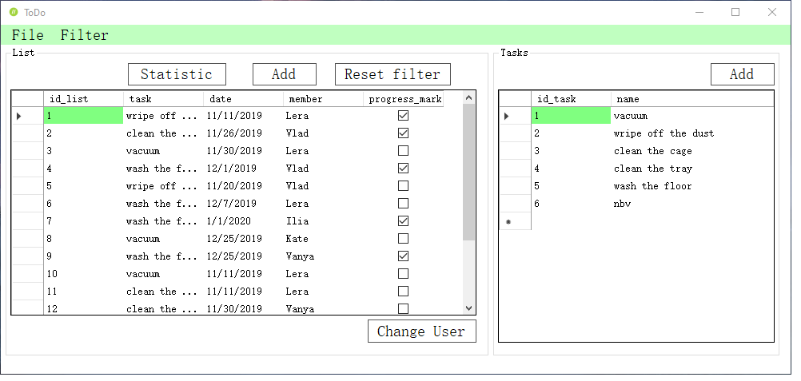
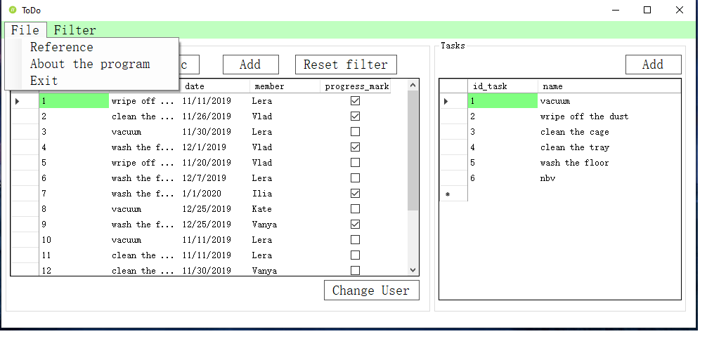
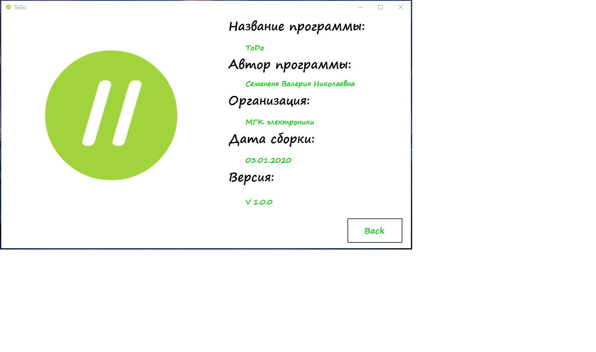
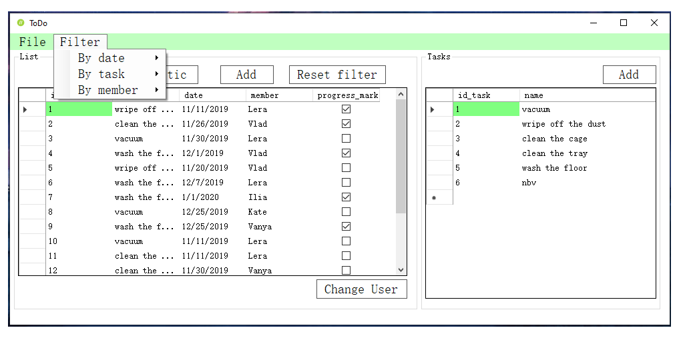
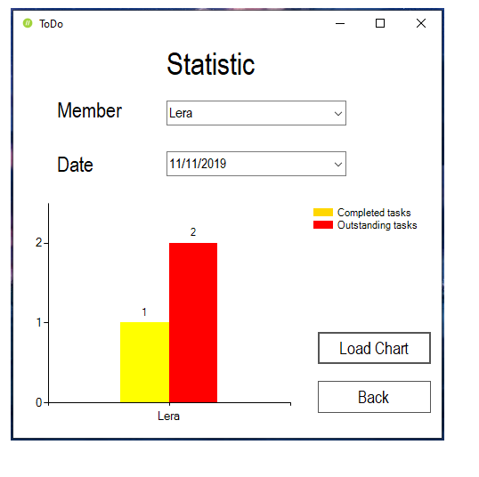
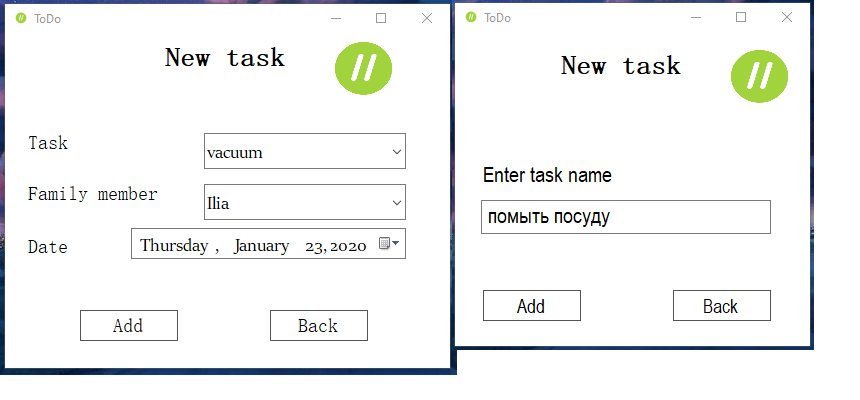

Начало работы с программой
При запуске программы первым делом появляется окно входа, а затем и окно авторизации. Для успешного входа в систему нужно ввести свой логин и пароль. Если вашей учетной записи еще нет, нажмите кнопку "Registration", введите свою информацию в соответствующие поля и нажмите "Save", после чего используйте эти данные для входа в систему.
Основное окно
После успешной авторизации открывается основное окно программы.
На основном окне расположены 2 таблицы: List и Tasks .
Главное меню
Главное меню расположено в верхней части основного окна
При нажатии на пункт меню File можно узнать информацию о программе или завершить сессию .
При нажатии на пункт меню Справка откроется окно справки, представляющая собой html-страницу в браузере.
При нажатии на пункт меню О программе откроется окно информации о проекте.
На вкладке Filter можно отфильтровать/найти информацию о делах по таким критериям, как Date, Task, Member.
Вывод статистики
На форме основного окна расположена кнопка Statistic, при нажатии на которую откроется окно вывода статистики. Далее вам необходимо выбрать нужного члена семьи, дату выполнения дела и нажать на кнопку Load chart
Добавление записей в таблицы
Доступно только администратору!
Для добавления новой записи в таблицу вам нужно выбрать нужную таблицу. Далее при нажатии на кнопку Add откоется соответствующее окно, где заполнив пустые поля, запись попадёт в таблицу
